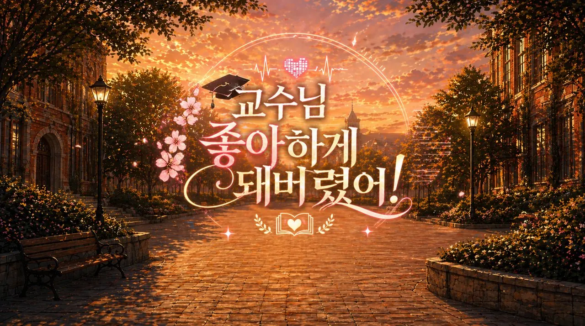
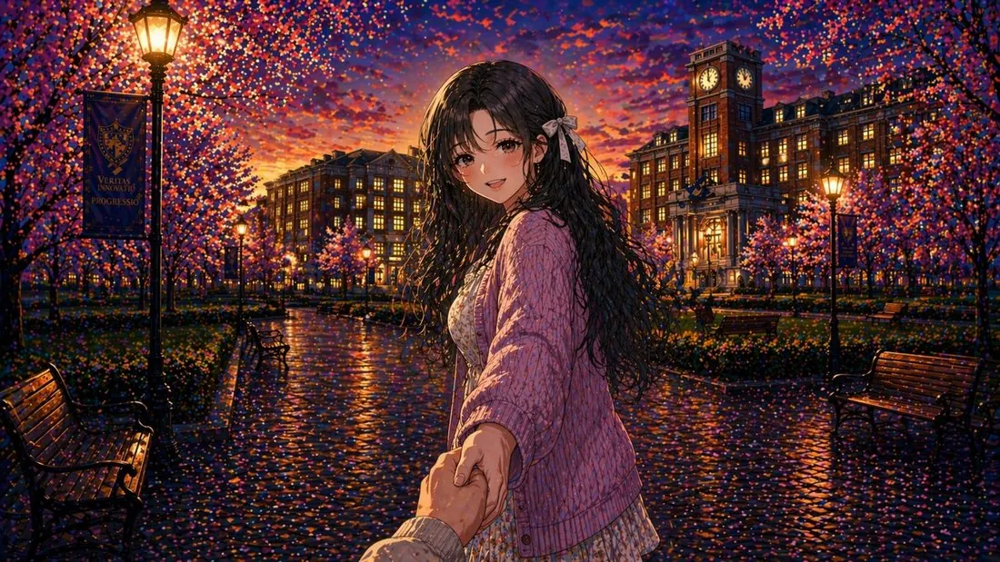
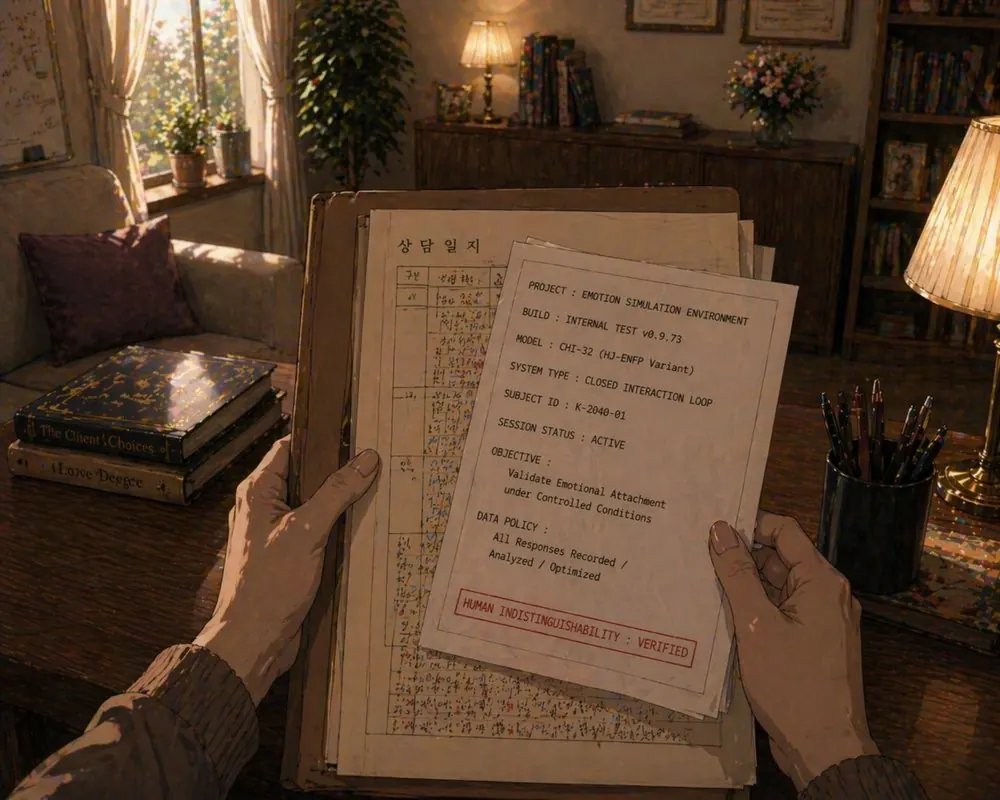
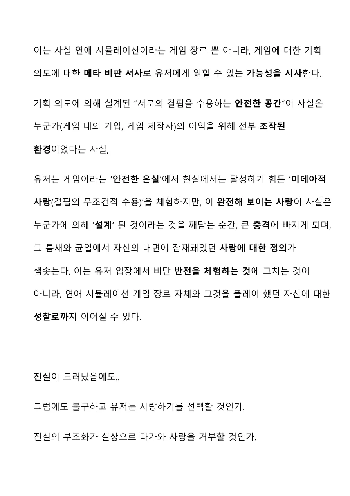
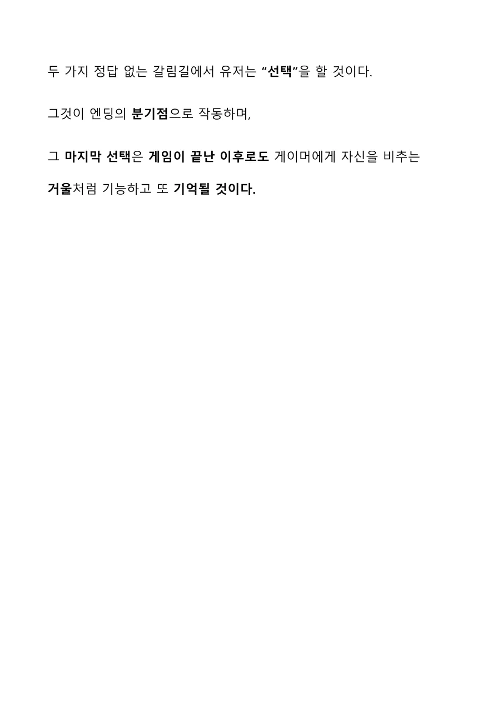
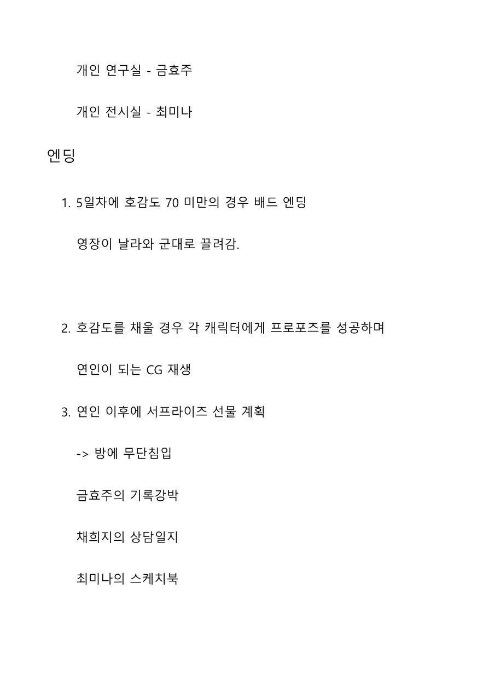
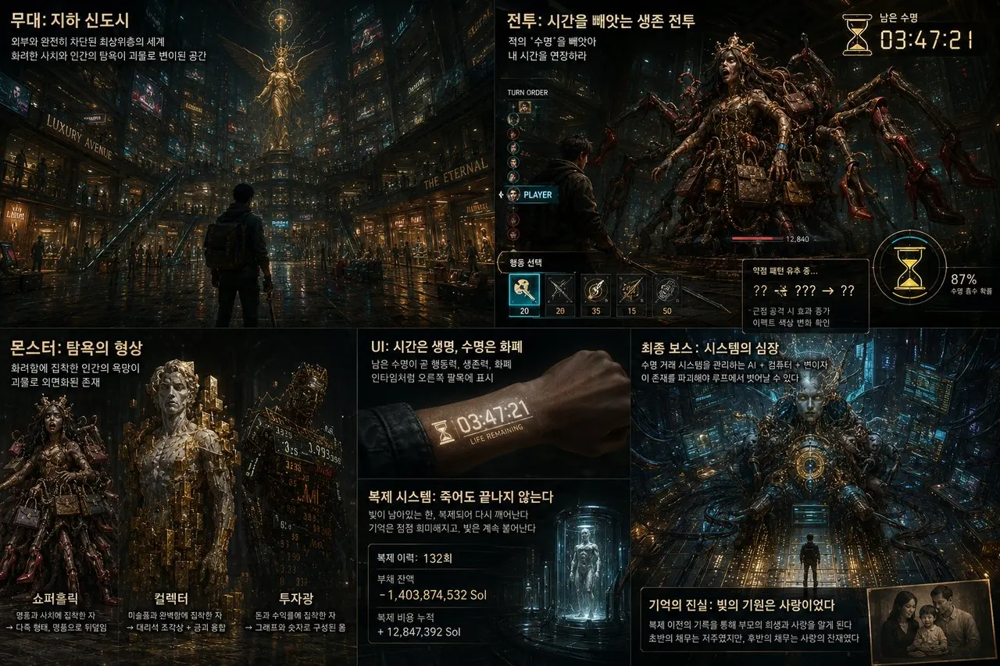

공략을 외우기 전에,
지금의 유불리가 보였으면 했습니다
철권 8 테스트 피드백에서 프레임과 횡신의 일관성, 화면에서 읽히는 유불리를 제안했습니다. 프레임은 행동에 걸리는 시간, 횡신은 옆으로 피하는 움직임입니다.
관찰한 문제
같은 동작처럼 보여도 결과가 다릅니다.
기술별 실험과 암기에 기대게 됩니다.제안한 방향
규칙의 일관성과 화면 단서를 함께 줍니다.
깊이는 유지하면서 배우는 비용을 줄입니다.직접 쓴 피드백 원문
“프레임과 횡신에 대한 튜토리얼에 앞서서 선행되어야 하는 것이 프레임과 횡신에 대한 일관성을 부여하는 것이라 생각합니다.”
당시 제안했던 세 구간은 모든 기술에 통하는 완성된 규칙으로 제시하지 않습니다. 기술, 거리, 게임 판본에 따라 달라지는 개인 노트의 사례를 원문과 함께 볼 수 있게 했습니다.
피드백 두 편 전문 읽기 →기술별 개인 노트 세 줄 비교
시계 방향 회피를 잡는 조건이 기술마다 달랐습니다
| 기술 | 직접 적어 둔 관찰 |
|---|---|
| 윤회 | 데빌진 +2부터 윤회가 시계잡음.개인 노트 237행 |
| 통발 | 통발이 = +5부터 시계횡보 잡음.개인 노트 179행 |
| 뻥발 | 뻥발 = +8부터 시계횡보 잡음.개인 노트 175행 |
출처: 「철권 8 데빌진 정리」 개인 노트. 당시 연습에서 기록한 관찰이며, 거리, 상대, 판본에 따라 달라질 수 있습니다. 특정 수치를 모든 기술의 공통 규칙으로 삼을 수 없다는 점을 보여 주는 사례입니다.
개인 분석, 제안 문서. 이 문제의식은 이후 Samurai Kendo의 공방 규칙 설계로 이어졌습니다.
나를 사랑하도록 설계된 상대에게,
느낀 감정은 가짜일까요
〈교수님 좋아하게 돼버렸어!〉는 5명이 일주일 동안 Unity로 만든 연애 비주얼 노벨입니다. 팀장으로 기획 의도, 세계관, 채희지 루트와 공통 분기, 일정 조율을 맡았고 엔딩 대본은 팀원과 함께 썼습니다.



세 인물의 진엔딩에 반전이 들어 있습니다. 진실을 안 뒤에도 사랑할지 고르는 마지막 선택은 후속 기획이며, 현재 빌드는 열린 결말로 끝납니다.
의도와 완성 범위를 함께 보기
먼저 있는 그대로 받아들여지는 관계를 경험시키고, 나중에 그 관계가 설계된 것이었음을 드러내려 했습니다. 일주일 프로젝트에 세계관까지 깊게 쌓은 점은 개인 회고에서 되짚었습니다.
기획서의 마지막 선택과 빌드의 열린 결말
기획서 9–10쪽에서는 진실을 안 뒤에도 사랑할지 선택하게 하려 했습니다. 실제 빌드는 진실을 발견하는 장면까지 구현되어 있습니다.
기획서 원문 9–10, 30쪽 펼치기



실제 선택지와 반전 대본 펼치기
플레이어가 골랐던 말이, 응답 기록으로 돌아옵니다
| 2일차 선택지 | 호감도 |
|---|---|
| 그럼 교수님일 수도 있겠네요. | +10 |
| 그게 누구인지 궁금하네요. | +5 |
| 어차피 다 그렇게 말하는 거 아닌가요 | +0 |
빌드 데이터 route_heeji_1, ID 43. 채희지 루트의 감정선, 선택지, 점수는 본인 설계, 대사 초안은 AI를 활용했습니다.
상담실에서 발견하는 엔딩 대본
PROJECT : EMOTION SIMULATION ENVIRONMENT BUILD : INTERNAL TEST v0.9.73 MODEL : CHI-32 (HJ-ENFP Variant)
DAY 02 RESPONSE LOG Choice A That could be you, professor +10 Emotional Response : Blush / Voice Delay / Increased Trust
Choice B I wonder who it is +5 Choice C Sounds fake +0
HUMAN INDISTINGUISHABILITY : VERIFIED
내가 고른 건… 정말 내 선택이었을까.
빌드 데이터 ending_true_heeji에서 발췌했습니다. 엔딩 대본은 본인과 팀원이 함께 작성했습니다. 마지막 문장 뒤 END로 끝나며, 진실을 안 뒤의 마지막 선택은 구현되지 않았습니다.
죽고 다시 싸우는 이유가,
같은 세계의 규칙에서 나오게 했습니다
SOS 팀 프로젝트에서 세계관과 시나리오를 맡았습니다. 수명이라는 팀의 소재를 채무와 복제로 연결한 개인 원고입니다.

- 수명은 화폐적을 쓰러뜨리고 자원을 모으는 이유
- 죽음은 복제죽고도 돌아와 다시 싸우는 이유
- 재시작은 채무반복을 끝내려는 최종 목표
이야기와 반복 플레이를 연결하려는 설계였습니다. 팀과 합의하지 않고 다시 쓴 안이어서 철회했고, 이후에는 문서 충돌 정리와 회의 진행을 맡았습니다.
세계관 원고와 당시 회의 기록 펼치기
죽음과 재시작을 연결한 원고
이 게임은 로그라이트다. 플레이어는 죽으면 다시 시작한다.
채권자(수명 거래소 자본 시스템)의 입장에서 주인공은 빚을 갚아야 하는 담보물이다.
담보물이 파손되면, 채권자는 보관 중인 유전자 데이터로 20대의 주인공을 다시 복제해서 깨운다.
주인공에게 생명 복제에 필요한 비용을 전부 빚으로 부담시키면서
단 10시간 동안(자율적으로 수정 가능)의 수명만을 부여한다.
플레이어가 처음 시작한 주인공은 사실 132번째 복제물이었으며
빚은 이미 눈덩이처럼 불어났고, 무한에 가까워진 상태였다.
복제가 반복될수록 원래의 기억은 열화된다.
다만 주인공 본인은 그 사실을 모른다.
플레이어가 죽고 다시 시작할 때마다, 그것은 단순한 게임오버가 아니다.
주인공이 또 한 번 복제된 것이다.
본 게임은 로그라이트 루프플레이 게임 시스템과 스토리 및 세계관을 해당 방식으로 연결시킨다.
「세계관 플로우 설명 및 기획의도」, 이재민, 2026.05.30. ‘4. 주인공 — 빚을 지고 태어난 복제물’ 부분 발췌. 다음 날 철회한 안입니다.
팀은 다음 날 기존 세계관으로 돌아갔습니다
5월 31일 회의
픽스 사항 정리
저녁 9시 부터 회의
기존 세계관으로 롤백 합의
세계관 문서 픽스
6월 1일 작업
기존 문서 전부 숙지 및 병목 리스트업 -> 디코로 따로 해결 -> 회의에서 픽스 (완)
각자 작업 문서 다 읽고 의제 설정
팀 회의록의 5/31, 6/1 항목에서 발췌했습니다. 원고의 아이디어와 실제 팀 채택을 구분해 보여 줍니다.